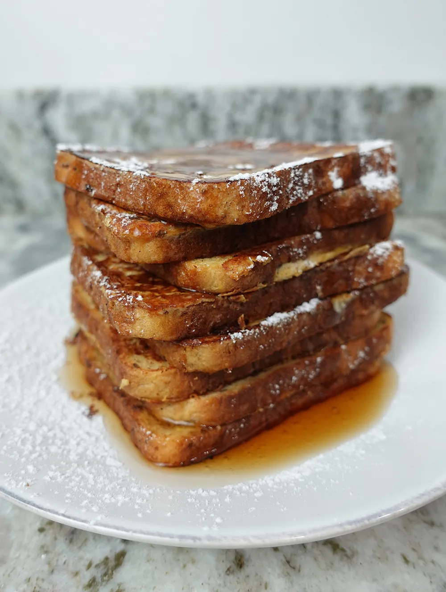

Anabolic French Toast

Description
This delicious breakfast combines high-protein ingredients
with flavorful spices and toppings, making it ideal
for bodybuilders and fitness enthusiasts.
Enjoy a nutritious twist on a classic favorite and transform
your morning routine with every bite!
Ingredients
- 120 grams or four eggs of Egg Whites (from whole eggs or carton)
- 2 slices of Regular Bread
- Protein Powder
- Cinnamon
- Vanilla Extract
- Artificial Sweetener
Steps
- In a large mixing bowl add 120 grams of egg whites (four egg whites), 15 grams of protein powder, and however much cinnamon, vanilla extract, and artificial sweetener that you like.
- Stir until fully combined with no visible clumps. Now is a good time to heat the pan. Use one that can fit all of your bread flat on the bottom of the pan.
- Take out 2 pieces of bread to be dipped in the mixture with a plate to put the bread on after.
- Place one slice of bread in the mixture at a time allowing it to fully absorb as much of the mixture as possible. (For max protein per slice)
- Once all slices of bread are ready, spray the pre-heated and place the uncooked french toast flat along the bottom so it cooks evenly.
- Flip the frech toast as needed, until it is fully cooked on both sides and in the center.
- Plate and enjoy with low calorie syrup, peanut butter, berries, bananas or any other toppings that you like.